房间分段照明工程AF Lgt11
Design overview
Standard delivery
对于以人为本的照明 (HCL)，ABT Pro 库中提供了特定的房间功能 (LgtHcLgt11)，作为优化实施工作流程的基础设施。
LgtHcLgt11 是一个基本应用程序功能，为来自中央应用程序类型 CenFnct11 的 HCL 分组通信提供服务，并为房间中的 HCL 功能预处理信息。
LgtHcLgt11
Principle
通过使用 LgtHcLgt11 并扩展现有的照明基本应用功能，应用工程师可以更轻松地针对房间的项目特定 HCL 功能进行编程。该设置是模块化的，因此可以根据项目需求和用例组合不同的功能：
- LgtHcLgt11: Main function for HCL. (Always needed)
- LocManOp11: Activating HCL via push button. (Works in combination with the control application functions. If LocManOp11 only is used with HCL, with no control application functions, set parameter EnExtSwiOnVal to Yes.)
- LgtPscMod11: Activating HCL via presence detector. (Works in combination with the control application functions.)
- LgtBrgtSwi11: Activating HCL via brightness.
- LgtConstCtl11: Constant lighting control with HCL.

照明装置除了维护因素外，还必须支持并考虑HCL控制的亮度调节。
示例：目标亮度 500lx
维护系数 0.5，亮度调节 200% – 如果在整个生命周期内保证 500lx 目标亮度 + HCL 的 500lx，则照明设备必须支持 2000lx。
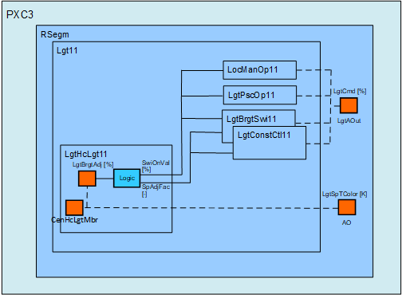
HCL 色温由上级自动化站计算并直接命令到输出对象 LgtSpTColor。
Implementation workflow
Boundary condition
对于 HCL，需要自动化站 PXC3.E..A-2。标准应用程序类型是为自动化站DXR2 设计的。这些标准应用程序类型作为在 PXC3.E..A-2 上调整和实现 HCL 功能的基础。
Recommended implementation workflow
如果 HCL 与 HVAC 功能相结合，那么我们建议从最适合 HVAC 功能的应用程序类型（FCU、VAV、FPB 或 HP）开始。
Apptype > 配置 HVAC 和照明功能 > 收缩
这是实现 HCL 功能的基础。
接下来，必须将 BAF LgtHcLgt11 添加到“照明 11”(Lgt11) AF。这是下面描述的用例特定实现的基础。
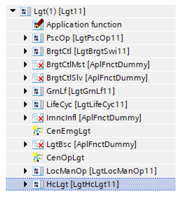
Use case: HCL with local manual operation (LgtLocManOp11)
Principle
仅将 HCL 与本地手动操作结合起来。 HCL 由照明按钮激活。
- Switch-on: The brightness and the color temperature are updated continuously according to HCL.
- Switch-off: The lighting is switched off.
- Any other command:1) Only the color temperature is updated. The update is done according to HCL.
1)照明命令：停止、调高、调低、升高、降低、转到级别、无操作、用户定义 1...3。
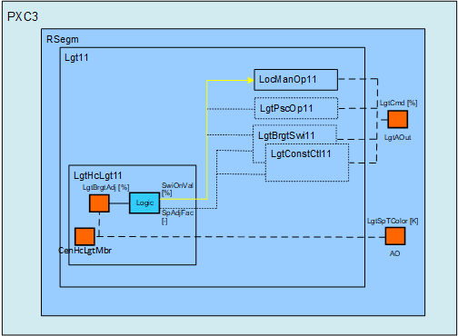
HCL 色温由上级自动化站计算并直接命令到输出对象 LgtSpTColor。
Main updates
必须实施以下编程更新。
AF LgtLocManOp11:
- Set parameter EnExtSwiOnVal to Yes.
Chart Lgt11:
- Adapt the wiring for the switch-on value as highlighted in the figure below.
See the wiring examples below if the lighting life cycle functionality is also needed.
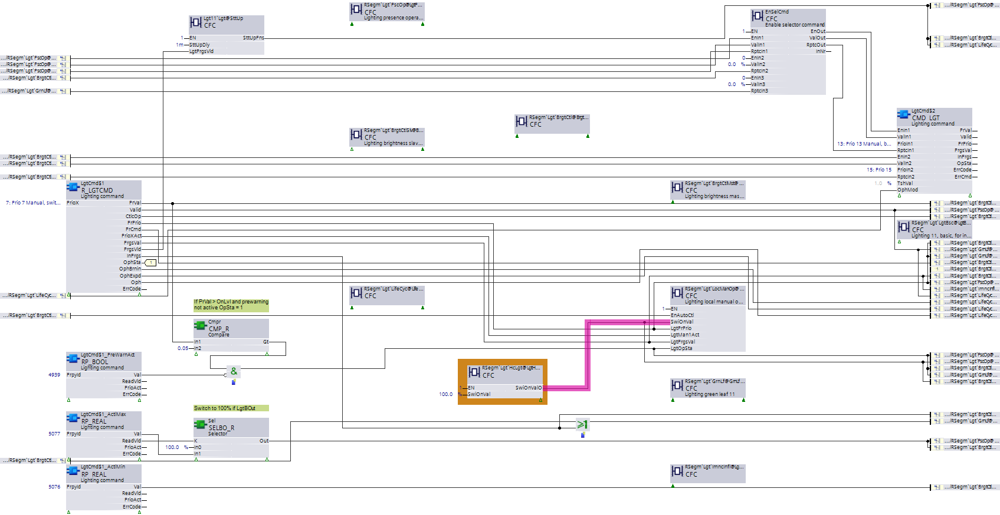
Use case: HCL with lighting presence operation (LgtPscOp11)
Principle
仅将 HCL 与存在操作结合起来。 HCL 由存在探测器激活。
- Present: The brightness and the color temperature are updated continuously according to HCL.
- Absent: The lighting is switched off.
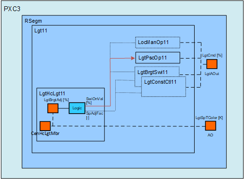
HCL 色温由上级自动化站计算并直接命令到输出对象 LgtSpTColor。
Main updates
必须实施以下编程更新。
Chart LgtPscOp11:
- No adaptions.
Chart Lgt11:
- Adapt the wiring for the switch-on value as highlighted in the figure below.
- Additional chart functionality: The switch-on value is shifted according to HCL.
照明亮度调节[%] | 开启值输出 [%] |
|---|---|
100 | 50 1) |
10-200 | 5-100 1) |
1)照明输出只能在 100% 处进行命令。请注意，亮度调整 100% 会缩放至开关值输出 50%。该比率与 10 到 200% 的 HCL 范围相结合，为所有 HCL 用例在 PX 调度程序上提供了通用配置模式。
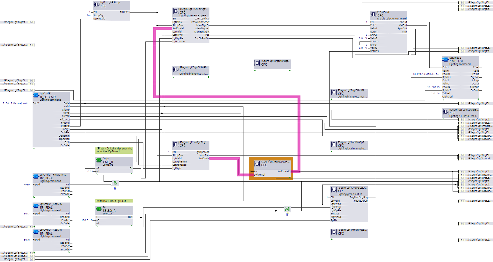
Use case: HCL with brightness switch (BrgtSwi11)
Principle
将 HCL 与亮度开关功能结合起来。 HCL 由亮度传感器激活。照明开启点根据 HCL 进行移动。
- Dark: The brightness and the color temperature are updated continuously according to HCL.
- Bright: The lighting is switched off.
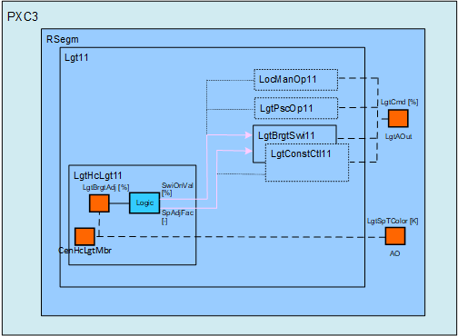
HCL 色温由上级自动化站计算并直接命令到输出对象 LgtSpTColor。
Chart LgtBrgtSwi11:
- Additional chart interface: Pin [LgtSpAdjFac]
- Additional chart functionality: The lighting switch-on point and the switch-on value are shifted according to HCL.
照明亮度调节[%] | 照明设定点调整系数 | 开启值输出 [%] |
|---|---|---|
100 | 1 | 50 1) |
10-200 | 0.1-2 | 5-100 1) |
1)照明输出只能在 100% 处进行命令。请注意，亮度调整 100% 会缩放至开关值输出 50%。该比率与 10 到 200% 的 HCL 范围相结合，为所有 HCL 用例在 PX 调度程序上提供了通用配置模式。
示例：照明开关点 500lx
照明亮度调节[%] | 照明当前开启点 [lx] | 接通值 [%] |
|---|---|---|
50 | 250 | 25 |
100 | 500 | 50 |
150 | 750 | 75 |
在图表 LgtBrgtSwi11 中：
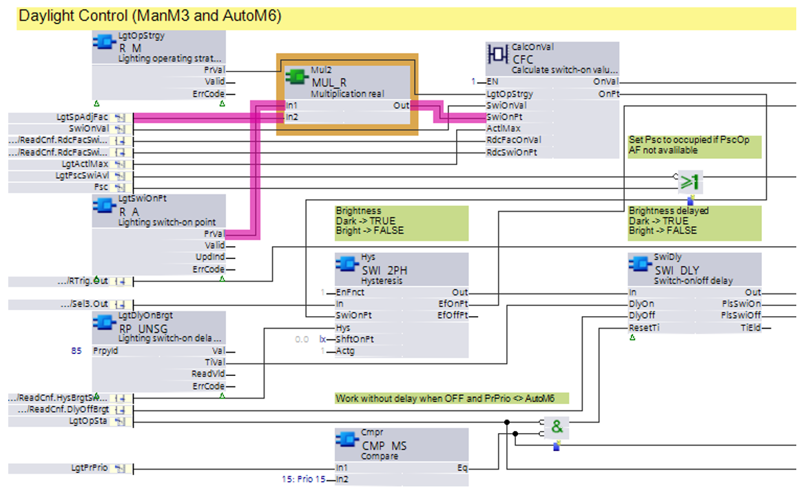
Chart Lgt11:
- Adapt the wiring for the switch-on value and connect the new pin [LgtSpAdjFac] as highlighted in the figure below.
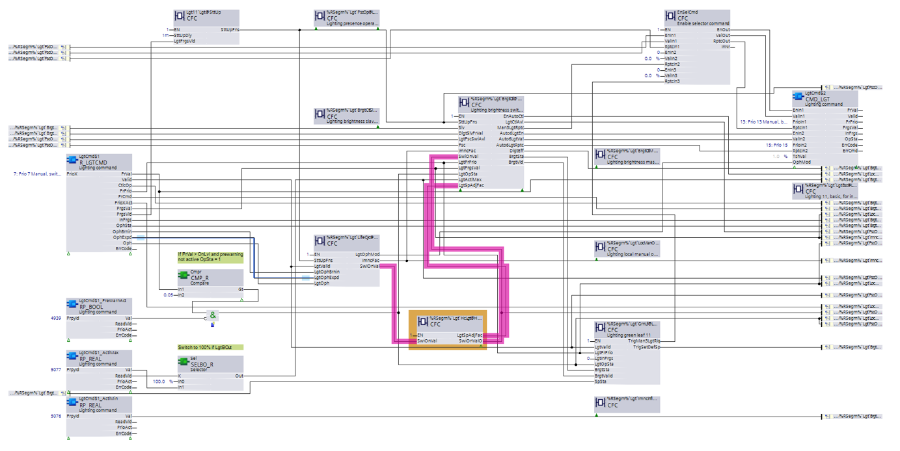
Use case: HCL with brightness constant control (LgtConstCtl11)
Principle
将 HCL 与亮度恒定控件和按钮相结合。 HCL 由按钮激活。亮度的照明设定点根据 HCL 进行移动。
- Brightness control activated:
- Dark: The brightness and the color temperature are updated continuously according to HCL.
- Bright: The lighting is switched off. - Manual operation active: Brightness according to manual operation. The color temperature is updated.
LgtLocManOp11
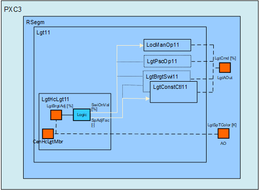
HCL 色温由上级自动化站计算并直接命令到输出对象 LgtSpTColor。
照明装置除了维护因素外，还必须支持并考虑HCL控制的亮度调节。
示例：目标亮度 500lx
维护系数 0.5，亮度调节 200% – 如果在整个生命周期内保证 500lx 目标亮度 + HCL 的 500lx，则照明设备必须支持 2000lx。
Chart LgtConstCtl11:
- Additional chart interface: Pin [LgtSpAdjFac]
- Additional chart functionality: The lighting setpoint for brightness is shifted according to HCL.
照明亮度调节[%] | 照明设定点调整系数 |
|---|---|
100 | 1 |
10-200 | 0.1-2 |
示例：亮度 500lx 的照明设定点
照明亮度调节[%] | 照明当前设定点亮度 [lx] |
|---|---|
50 | 250 |
100 | 500 |
150 | 750 |
在图表 LgtConstCtl11 中：
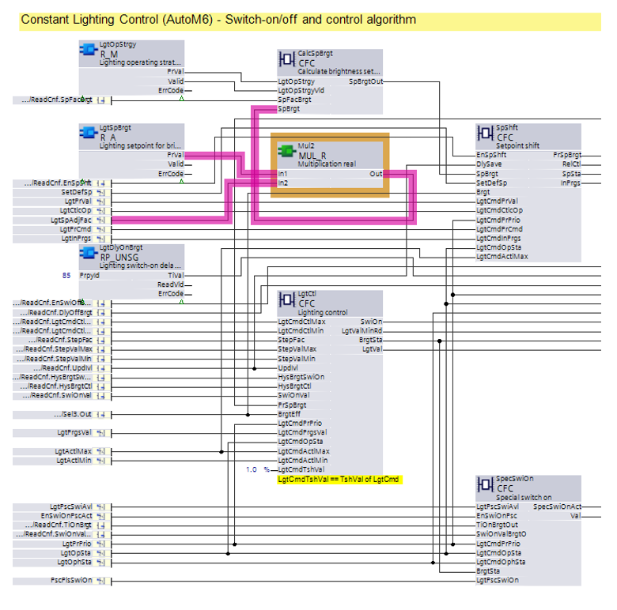
Chart Lgt11:
- Adapt the wiring for the switch-on value and connect the new pin [LgtSpAdjFac] as highlighted in the figure below.
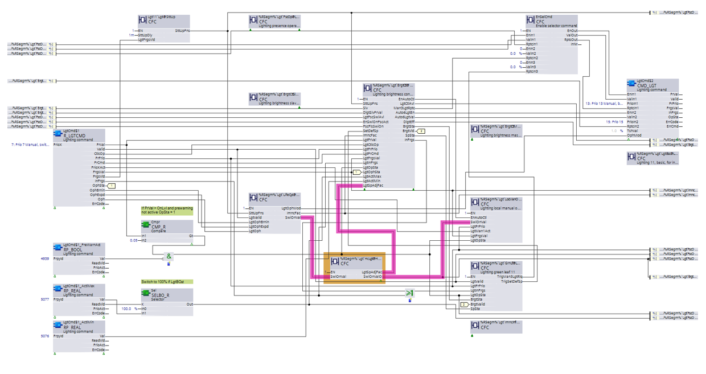